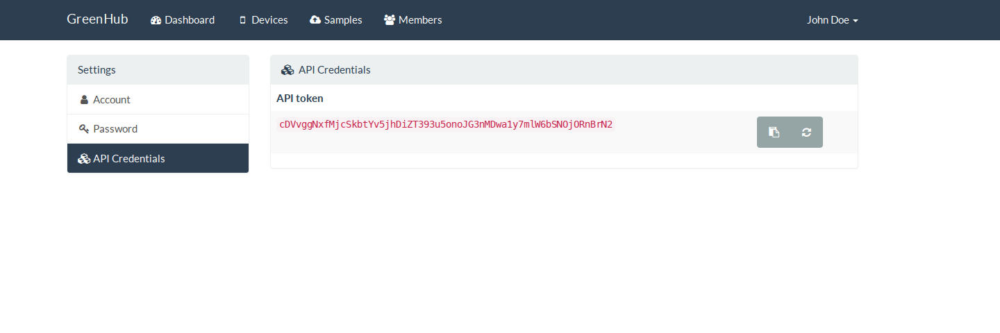

Getting Started
Before start using the GreenHub API, be sure to understand our privacy policy. You can read it here.
The GreenHub API provides access to the project's data repository. The repository contains real-world data gathered from a diverse population of Android devices.
Using the API you will be able to query all the data collected from the Android devices via our app BatteryHub.
Create An Account
In order to start using the GreenHub API, first you will need to create an account in our GreenHub Farmer web app.
- Head over to https://greenhub.di.ubi.pt/register.
- Fill the necessary fields to complete the registration process.
- After you create your account, it will be necessary to verify your email address.
- So check your inbox, and follow the email instructions you just got.
- You should be redirected to the GreenHub Farmer homepage and you should see an alert saying that you are now verified!
You can now login with your credentials and use the web app at https://greenhub.di.ubi.pt/login.
That's it! It will only takes a couple of minutes to create an account.
Obtaining The API Key
You must verify your account before having access to the API key!
Once logged-in, go to your Settings page (by clicking on the top right menu with your username). You will find a section called API Credentials as shown on the image below:

Then copy your API token and keep it in a save place. You can now start using the GreenHub API and the other services.